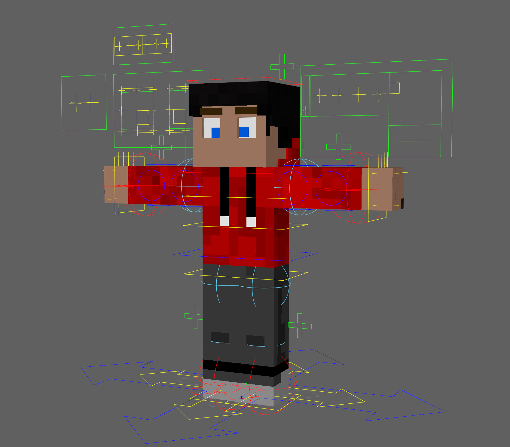
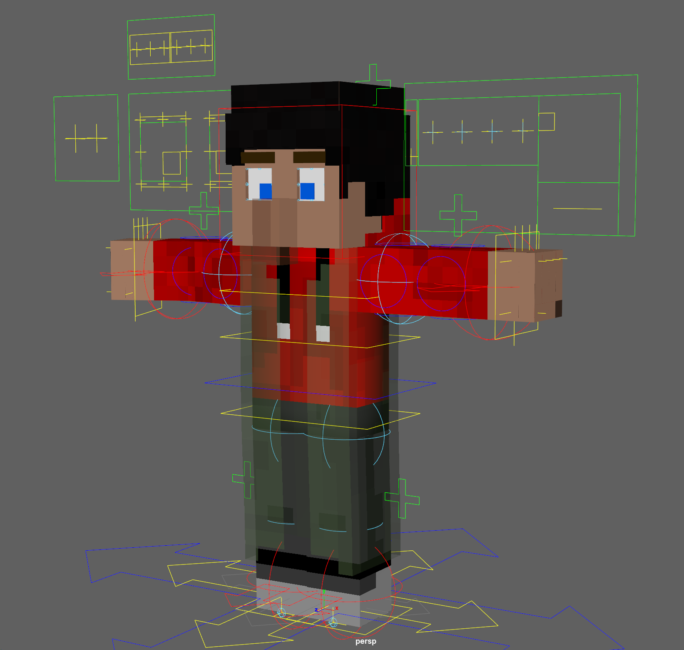

This player rig is the same rig I use in my own videos! Anything you see in the videos is possible with this download. I create the rig for myself, and I provide it to you as-is for free. You're welcome to make suggestions, but I might not add them if I don't find them beneficial to my own videos.
Features
Many controls have actions for translate, rotate, and scale. For example: translating the eye control moves the eye, rotating the control rotates the eye, and scaling the control dilates the eye.- Head
- Automatic hair extrusion (uses hat layer on skin)
- No texture deformation on face
- Top and bottom eyelid with full rotation control, both can be overdriven
- Each eye has 8 control points, which can all be translated and rotated independently
- Eye control can be translated and scaled for custom position and sizing
- Pupil size
- Independent eye translate and rotation controls
- Mouth has 8 control points, each can be translated and rotated independently, with no limits
- Mouth position and rotation control
- Teeth control
- 2D mouth open / pinch control (for lipsync)
- Enable Disable facial features
- 3 eyebrow states: Normal, Villager, and Disabled
- Rounded or square mouth
- Torso
- Torso location control
- 3 fine tuning controls: 2 chest, 1 hips, all can be translated / rotated without limits
- Squash and stretch using fine tuning controls
- Smooth bends
- Arms
- IK / FK toggle
- sharp or smooth bends
- Fingers (retracted = disabled, can be rotated)
- > 90° bends
- wrist controls (all axis)
- Extra controls for arm shape (intended for cartoony animation)
- Legs
- IK / FK toggle
- Sharp or smooth bends
- Fancy feet
- squash and stretch
- support for almost 180° bends
- Other
- Walk helper: auto-position the character rig based on the IK foot controls!
- Support for any scale (some render engines break on very small sizes)
- HIK retargeting support: apply motion capture animation directly to the rig! See my tutorial here if you have a Kinect sensor.
- Independent Root and Floor controls
- Set the viewport smooth level and render smooth level independently
- Villager mode: Enables villager robe and nose
Screenshots

Screenshot of the rig in its default state
Screenshot of the rig in its default state
Screenshot showing posing capabilities

Villager mode enabled. When rendered, the nose and robe will be solid
Villager mode enabled. When rendered, the nose and robe will be solid
Automatic walk cycle helper video demo (Watch in 4K if possible)
Starring in these videos!
The rig supports any 64x64 Minecraft skin file. Higher resolution textures will work as well, but they must be 1:1 squares and the texture placement must match. I do not provide any textures with this rig. Check out this page for information about how to extract the textures from Minecraft.
Download Rig
Supported Maya versions: 2016 Extension 2 SP 2 or newer. Please give credit! Copy-paste the following into your description:
Player Rig by Ravbug Animations
Youtube: https://www.youtube.com/ravbuganimations
I announce progress updates on my Twitter, which you can find here: Follow @ravbug